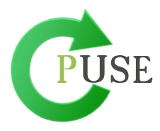

This is my personal web page you can find information about me and my projects. Here some of my projects. Can Eldem
Puse is a simple sequence diagram drawer which utilizes a different approach for generating diagrams. Instead of drawing sequence diagrams in the old fashioned way of dragging and dropping items, Puse enables users to give textual commands and generate the corresponding graphics immediately. 
The project of UControl is to develop a home automation system which will be controlled by body motions and gestures. UControl software system will be using Microsoft Xbox Kinect 3D camera. This project was awarded by Bilkent University and CTIS department as a second ranking team among Senior Project.This project developed by four people.
Diabeta is java based mobile application prepared for diabetics people. It enable users to calculate approximate sugar level according the things they eat. This project developed with Atifcan Ergin